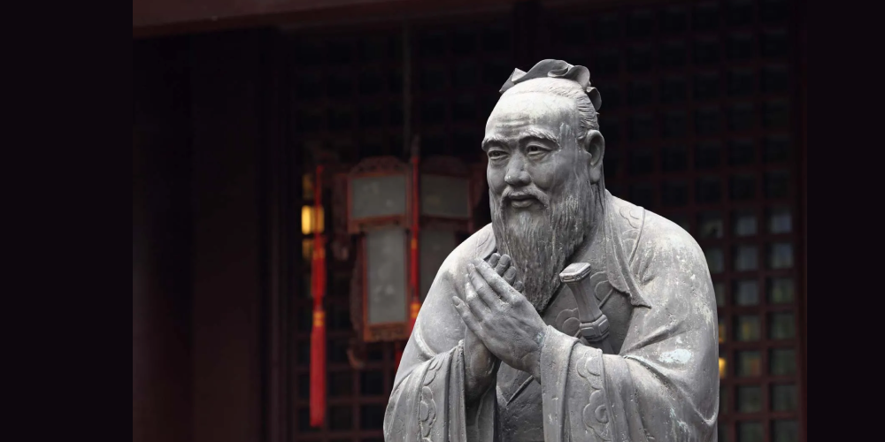
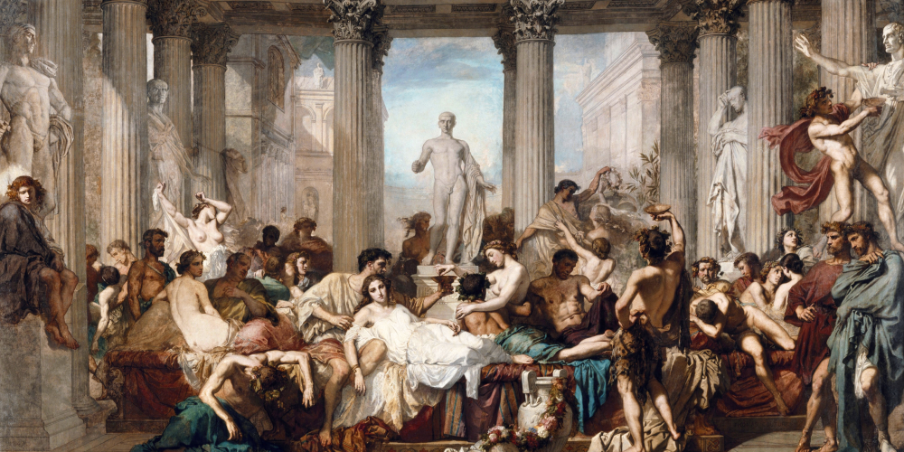
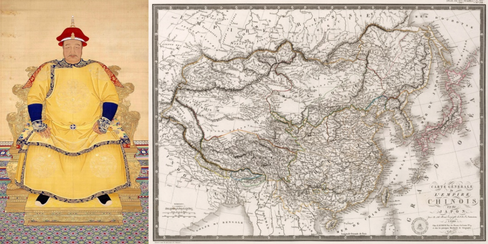
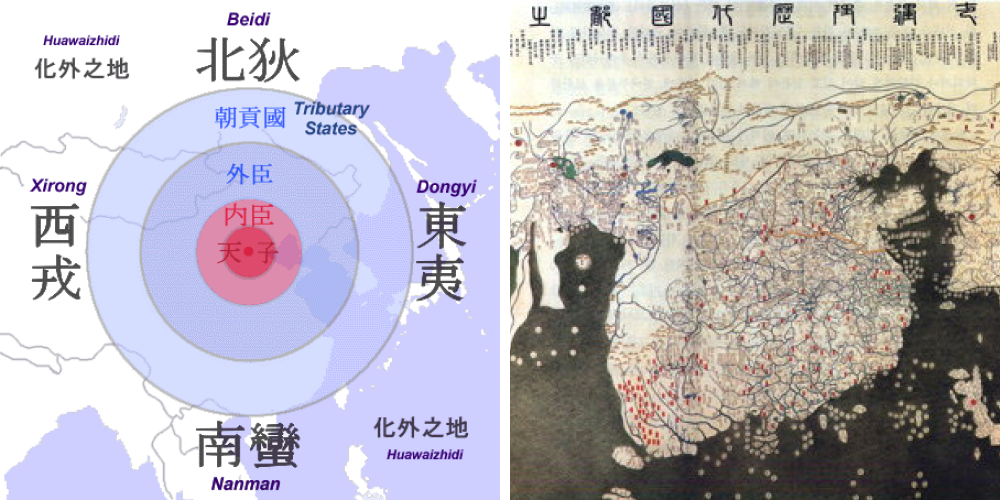
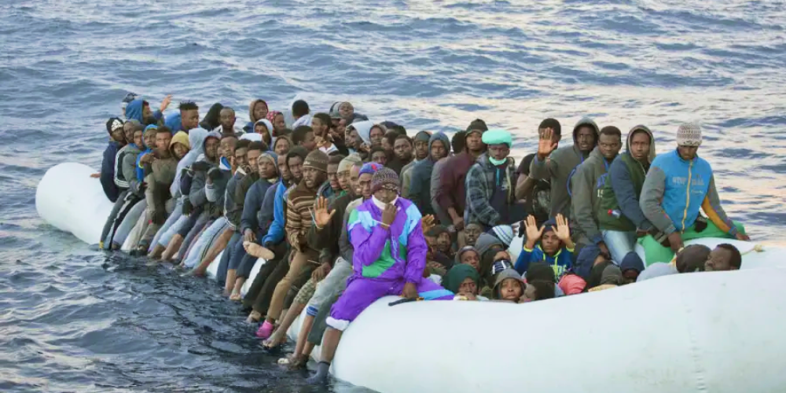
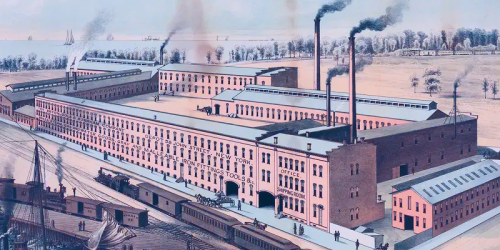
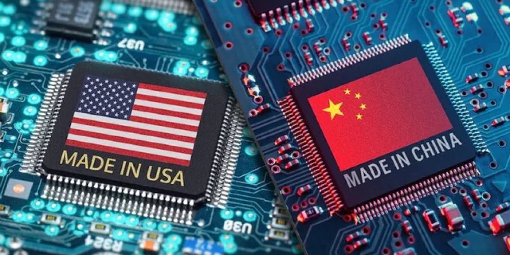
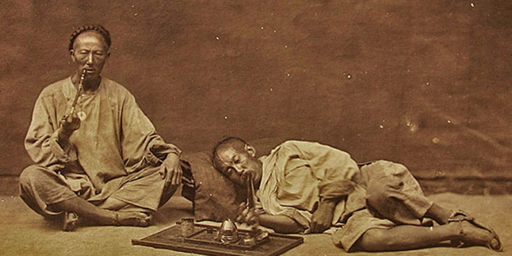
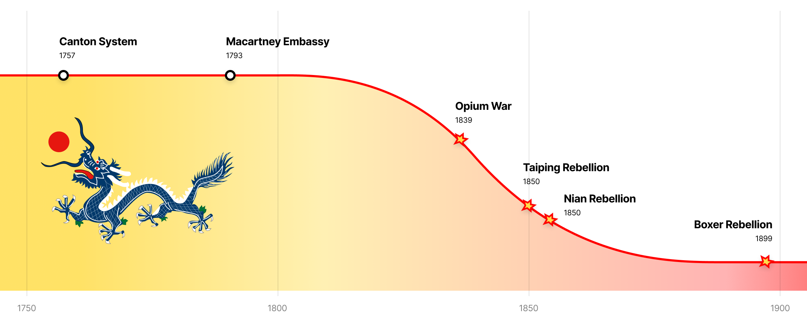

I am writing this on August 6, 2024 — right after the UK’s recent wave of far-right, anti-immigrant riots. Such events will only start to become more common in the future, as European populations continue to be riled up against their nations’ liberal immigration policies over the past 30 years.
Many news outlets have already voiced their opinions, with Elon Musk warning of a “civil war” while others dramatically proclaimed the “death of Europe.” Even most ordinary people are aware of this at this point.
As for myself – I want to take a step back, and offer an Eastern perspective to this entire saga. Watching the UK news, I could not help but compare recent European events with the slow decline (and eventual collapse) of the 🐲 Qing Dynasty (1644 - 1911) — the end of the Chinese imperial system.
More specifically, these riots scenes reminded me of the 🐉 Boxer Rebellion (1899 - 1901), a violent anti-foreign and populist uprising.
I’m going to break down the similarities in the following categories, and end up with a list of **predictions** based on these common patterns.
Qing |
Europe |
🧠 IdeologyThey bet on a single idea... |
|
ConfucianismConfucianism proved to be too rigid and backwards-looking to adapt to changing times, as it discouraged original thinking.  |
LiberalismIndividualism has disintegrated the national unit, as it stigmatized any collective effort as being too backwards.  |
📈 Prosperity... and it worked very well! |
|
The High Qing Era (1683 - 1799)The 18th century saw China reach its largest-ever territorial height, under the leadership of 3 brilliant emperors. Chinese culture was admired worldwide, inspiring copycats like the Chinoiserie trend in Europe.  |
The European Miracle (c. 1850 - 1990)The 19th and 20th centuries saw Europe reach its largest-ever territorial height, under the leadership of 3 brilliant emperors. European culture was admired worldwide, inspiring copycats like the Occidentalisme trend in Japan & America. |
😤 ArroganceBut they became detached from reality... |
|
SinocentrismSinocentrism viewed the outside world as “barbarians,” going so far as to outright reject European technology as useless (Macartney Embassy).  |
European SupremacyEuropean Supremacy views the outside world as backwards, as evidenced by Western Media’s condescending tone toward everyone else (CCP, dictatorships, etc.). |
📕 Policy... and made a critical mistake. |
|
Isolationism (1757 - 1842)Isolationism led China to close itself from the rest of the world, which meant inevitable decline. 1757: The Canton System was established, limiting foreign trade to one single port. 1793: The Macartney Embassy was rejected by the Qing emperor, isolating China even more. 
|
Mass Immigration (c. 1980s - present)Openness led Europe toward a liberal immigration policy, which meant inevitable ethnic conflict. 1968: The May 68 protests established liberalism & openness as core European values. 1992: The Maastricht Treaty formed the European Union, opening Europe even more.  |
📉 Technological DeclineThey failed to reboot & modernize... |
|
IndustrializationChina fell behind on industrialization, while Europe / US were building steam engines.  |
Information TechnologyEurope fell behind on high-tech industries, while China / US were building tech conglomerates.  |
🚬 Addiction... while the population became addicted. |
|
OpiumOpium made many Chinese addicted, incompetent, and fueled by drugs. The British / Europeans purposely smuggled opium to make more money.  |
AlgorithmsAlgorithms made many Europeans addicted, incompetent, fueled by rage politics. The Americans / Chinese purposely designed addictive apps to make more money. 
|
⚔️ BacklashThere were final attempts to turn back time... |
|
Late Qing Rebellions (c. 1850 - 1900)Disaffected peasants began to riot, attempting to violently restore their nation's former glory. 1850: ☦️ The Taiping Rebellion was established, limiting foreign trade to one single port. 1851: ✊ The Nian Rebellion was a left-wing insurgency attempting to overthrow the Qing state. 1899: ⚔️ The Boxer Rebellion attacked foreigners |
European Riots (2020 - present)Disaffected workers began to riot, attempting to violently restore their nation's former glory. 2022: 🌍 Just Stop Oil was established, limiting foreign trade to one single port. 2023: ✊ The Nahel Merzouk riots were left-wing insurgencies protesting against the French state. 2024: ⚔️ UK nationalist riots attack foreigners 
|
🪦 Collapse... but they ultimately failed. |
|
Xinhai Revolution (1910-1911)The Boxer Rebellion (1899 - 1901) attempted to expel foreigners and reassert China’s sovereignty. However, it ended with the Eight-Nation Alliance. |
TBD |
As for myself – I want to take a step back, and offer an Eastern perspective to this entire saga. Watching the UK news, I really couldn’t help but compare recent European events with the slow decline & eventual collapse of the Qing Dynasty (1644 - 1911).
I’m going to break down the similarities in the following categories, and end up with a list of **predictions** based on these common patterns.

1) Foreign Intervention in Europe
When the Boxer Rebellion arose, the 🇬🇧🇫🇷🇷🇺🇯🇵 Eight-Nation Alliance (British, French, Japanese, etc.) sent its armies into China to protect its own citizens & reassert their authority.
I predict that with the rise of the far-right in Europe, 🇮🇳🇵🇰🇸🇦🇨🇳 foreign governments (Indian, Pakistani, Arab, Chinese, etc.) will try to protect its own citizens by supporting immigrant activist organizations.
Let's emphasize how significant this would be, if it were to actually come fo fruition. This means that

2) Cults and Religious Turmoil
When China was declining, many strange cults tried to restore China to its glory days.
-
☦️ Taiping Rebellion (1850 - 1864)
Utopian / quasi-Christian cult — Hong Xiuquan (洪秀全), proclaiming to be the brother of Jesus Christ, led his God Worshipping Society (拜上帝會) into a violent revolution with the goal of establishing the Taiping Heavenly Kingdom.
Suppressed by the Ever Victorious Army (常勝軍).
-
⚔️ Nian Rebellion (1851 - 1868)
Populist / class-struggle uprising — With the slogan "kill the rich and aid the poor", the Nian troops allied with the Taiping Heavenly Kingdom rebels in order to overthrow the Qing establishment.
Suppressed by the Ever Victorious Army (常勝軍).
-
🐉 Boxer Rebellion (1899 - 1901)
Nationalist / anti-foreign uprising — The Society of Righteous and Harmonius Fists (義和拳) ("Boxers") violently attacked foreigners, believing that their Chinese martial arts made them invulnerable to Western bullets.
Suppressed by the Eight-Nation Alliance.

I predict that we’re going to see the rise of strange ideologies & movements in Europe, as various groups all claim to be able to restore Europe to its glory days.
-
🌍 Environmental Cults
Utopian / quasi-Christian cult — Figures such as Greta Thunberg may well become the face of a new utopian, pseudo-religious approach to environmental concerns. Just Stop Oil, a group known for their public vandalism stunts, is a good example of their religious fervor.
-
💵 Left-Wing Economic Insurgencies
Populist / class-struggle uprising — With the slogan "tax the rich", politicans such as Jean-Luc Mélenchon will continue to ally with the Greens / Environmentalists in order to redistribute wealth.
-
🏰 Right-Wing Nativist Nationalism
Nationalist / anti-foreign uprising — Organizations like the English Defence League (EDL), Les Natifs ("The Natives"), and others will keep violently attacking foreigners & attempt to restore their white-majority nations.
3) East Asian / American Robot Race
When the Boxer Rebellion arose, the 🇬🇧🇫🇷🇷🇺🇯🇵 Eight-Nation Alliance (British, French, Japanese, etc.) sent its armies into China to protect its own citizens & reassert their authority.
I predict that with the rise of the far-right in Europe, 🇮🇳🇵🇰🇸🇦🇨🇳 foreign governments (Indian, Pakistani, Arab, Chinese, etc.) will try to protect its own citizens by supporting immigrant activist organizations.
-
🧪 Scientific Revolution (17 th Century)
Fundamental breakthroughs — rr
Atomic Theory, Laws of Physics, Elements
-
💡 The Enlightenment (18 th Century)
Moral and political theory — As the Scientific Revolution unveiled the laws of nature, thinkers began to apply these laws to create new ideological and moral frameworks.
Democracy, Individual Rights, Social Contract
-
🏭 Industrial Revolution (19 th Century)
Real-world applications — rr
Steam Engine, Automatic Weapons, Automotives

I predict that with the rise of the far-right in Europe, 🇮🇳🇵🇰🇸🇦🇨🇳 foreign governments (Indian, Pakistani, Arab, Chinese, etc.) will try to protect its own citizens by supporting immigrant activist organizations.
-
🧠 AI Revolution
Fundamental breakthroughs — rr
-
🙍♂️ Human-Machine Ethics
Moral and political theory — rr
-
🤖 Robotics Revolution
Real-world applications — rr